4 Pitot Statics
Editor’s Note
In an effort to reduce confusion and conflict regarding pitot and static pressure nomenclature, SFTE has elected to change two definitions and symbols since the first edition of this handbook was released. Henceforth, \(\Delta Ps\) shall indicate static pressure ERROR (\(\Delta P_s = P_s - P_a)\) and \(\Delta P_T\) shall indicate total (i.e. pitot) pressure ERROR (\(\Delta P_T = P_p - P_T\)). This nomenclature eliminates the \(\Delta P_p\) symbol and confusion as to whether it indicates position error or pitot error.
Common Nomenclature
| Symbol | Definition |
|---|---|
| \(a\) | speed of sound |
| \(a_0\) | speed of sound at sea level on a standard day |
| \(M\) | Mach number |
| \(P_a\) | ambient pressure |
| \(P_0\) | ambient pressure at sea level on a standard day (\(=2116.2 lb/ft^2 = 29.92 in Hg\)) |
| \(P_p\) | pitot pressure corrected for instrument error only |
| \(P_s\) | static pressure (indicated at static port) |
| \(P_T\) | total pressure |
| \(q\) | incompressible dynamic pressure |
| \(q_c\) | compressible dynamic pressure (\(=P_T-P_a\)) |
| \(q_{\mathrm{cic}}\) | instrument corrected differential pressure (\(=P_p-P_s\)) |
| \(T_a\) | ambient temperature (absolute scale) |
| \(T_0\) | ambient temperature at sea level on a standard day (\(=288.15 K = 15° C = 518.7°R=59.0°F\)) |
| \(T_T\) | total temperature (absolute scale) |
| \(V_c\) | calibrated airspeed |
| \(V_e\) | equivalent airspeed |
| \(V_g\) | ground speed |
| \(V_i\) | indicated airspeed |
| \(V_T\) | true airspeed |
| \(\Delta H_{\mathrm{ic}}\) | altimeter instrument correction |
| \(\Delta H_{\mathrm{pc}}\) | altimeter position error correction |
| \(\Delta P_D\) | dynamic pressure error (\(=P_T-\Delta P_s\)) |
| \(\Delta P_T\) | total (pitot) pressure error (\(=P_P-P_T\)) |
| \(\Delta P_s\) | static pressure error (\(=P_s-P_a\)) |
| \(\Delta V_{\mathrm{ic}}\) | airspeed instrument correction |
| \(\Delta V_{\mathrm{pc}}\) | airspeed position error correction |
| \(\delta\) | pressure ratio between ambient and sea level std (\(=P_a/P_0\)) |
| \(\theta\) | temperature ratio between ambient and sea level std (\(=T_a/T_0\)) |
| \(\rho_0\) | ambient density at sea level on a std day (\(=0.002 377 slg/ft^3\)) |
| \(\sigma\) | density ratio between ambient and sea level std (\(=P_a/P_0\)) |
| \(\gamma\) | ratio of specific heats (\(=1.4\) for air) |
4.1 Subsonic Airspeed and Mach Equation
True Airspeed
\[\begin{equation*} V_{T} = \left\lbrack \frac{2\gamma}{\gamma-1} \frac{P_a}{\rho_a} \left( \left\lbrack \frac{P_T - P_a}{P_a} + 1 \right\rbrack^\frac{\gamma-1}{\gamma} - 1 \right) \right\rbrack ^{1/2} \end{equation*}\]
Equivalent Airspeed
(= \(V_T\) equation with assumption of std day sea level density)
\[\begin{equation*} V_{e} = \sqrt{7\frac{P_{a}}{\rho_0}\left( \left\lbrack \frac{P_{T} - P_{a}}{P_{a}} + 1 \right\rbrack^{\frac{2}{7}} - 1 \right)} = V_{T}\sqrt{\frac{\rho_{a}}{\rho_0}} = V_{T}\sqrt{\sigma} \end{equation*}\]
Calibrated Airspeed
(= \(V_e\) equation with assumption of std day sea level pressure)
\[\begin{equation*} V_{c} = \left\lbrack \frac{2\gamma}{\gamma - 1}\frac{P_0}{\rho_0}\left( \left\lbrack \frac{P_{T} - P_{a}}{P_0} + 1 \right\rbrack^{\frac{\gamma - 1}{\gamma}} - 1 \right) \right\rbrack^{\frac{1}{2}} \end{equation*}\]
\[\begin{equation*} \sqrt{7 \frac{P_0}{\rho_0}\left( \left\lbrack \frac{q_c}{P_0} + 1 \right\rbrack^{\frac{2}{7}} - 1 \right)} \end{equation*}\]
Applying British units (\(lb/ft^2\)) and converting from ft/sec to knots yields
\[\begin{equation*} V_{c} = 1479\sqrt{\left\lbrack \frac{P_{T} - P_{a}}{2116} + 1 \right\rbrack^{\frac{2}{7}} - 1} ~(kts) \end{equation*}\]
Mach Number
\[\begin{equation*} M = \frac{V_{T}}{a} = \sqrt{\frac{2}{\gamma - 1}\left\lbrack \left( \frac{P_{T} - P_{a}}{P_{a}} + 1 \right)^{\frac{\gamma - 1}{\gamma}} - 1 \right\rbrack} = \sqrt{5\left( \left\lbrack \frac{q_{c}}{P_{a}} + 1 \right\rbrack^{\frac{2}{7}} - 1 \right)} \end{equation*}\]
4.2 Scale Altitude (Compressibility ) Correction
The name comes from the fact that although the equivalent airspeed equation does correct for compressibility, the sea level pressure assumption used for calibrated airspeed makes the compressibility correction valid only for that (sea level) pressure. Above sea level, the calibrated airspeed must be re-scaled for pressure effects on compressibility. The mathematical method for determining \(V_e\) from \(V_c\) is to first solve the calibrated airspeed equation for \(q_c\).
\[\begin{equation*} q_c = P_0 \left\lbrack \left( \frac{\rho_0}{P_0} \frac{V_c^2}{7} + 1 \right)^{3.5} - 1 \right\rbrack \end{equation*}\]
Next, substitute this value and the ambient pressure (\(P_a\)) into the equivalent airspeed equation. (\(q_c = P_T - P_a\))
\[\begin{equation*} V_e = \sqrt{7 \frac{P_a}{\rho_0} \left( \left\lbrack \frac{q_c}{P_a}+1 \right\rbrack^{2/7} - 1 \right) } \end{equation*}\]
The adjacent chart does this graphically for all subsonic airspeeds.
\[\begin{equation*} V_e = V_c + \Delta V_c \end{equation*}\]
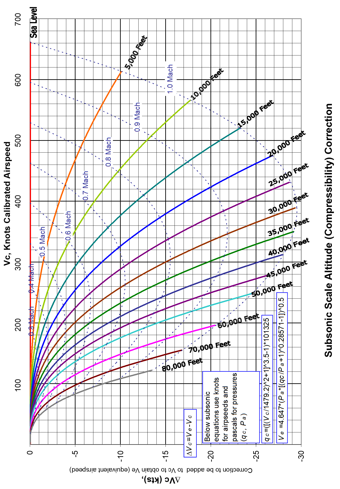
4.3 Subsonic Relations Between Compressible and Incompressible Dynamic Pressure
For constant density (incompressible) flow Bernoulli’s equation reduces to
\[\begin{equation*} V_T = \sqrt{\frac{2}{\rho_a}(P_T - P_a)} = \sqrt{\frac{2q}{\rho_a}} \end{equation*}\]
Where incompressible dynamic pressure \(q\) is defined as \(P_T-P_a\).
As airflow speed increases, its density at the stagnation point increases thereby increasing the sensed pressure. The ratio between compressible & incompressible dynamic pressure can be written as a function of Mach number
\[\begin{equation*} q_c = q \left\lbrack 1 + \frac{M^2}{4} + \frac{M^4}{40} + \frac{M^6}{1600} + ... \right\rbrack \end{equation*}\]
True dynamic pressure \(q\) (as used in modeling) is defined in dimensional analysis as:
\[\begin{equation*} q = \frac{1}{2} \rho_a V_T^2 = \frac{1}{2}\rho_0V_e^2 \end{equation*}\]
This value for \(q\) should not be confused with compressible (a.k.a. impact or differential) pressure, \(q_c (= P_T - P_a)\) 
4.4 Supersonic Airspeed and Mach Equations
\(P_T'\) denotes pitot pressure behind shock wave
True Airspeed
\[\begin{equation*} \frac{P_T' - P_a}{P_a} = \frac{q_c}{P_a} = \left[ \frac{\gamma + 1}{2} \left( \frac{V}{a} \right)^2 \right]^\frac{\gamma}{\gamma-1} \left[ \frac{1}{ \frac{2\gamma}{\gamma+1} \left( \frac{V}{a} \right)^2 - \frac{\gamma-1}{\gamma+1} } \right]^\frac{1}{\gamma-1} - 1 \end{equation*}\]
Equivalent Airspeed (valid if \(q_c/P_a > 0.892 929 158\))
\[\begin{equation*} \frac{q_c}{P_a} = \frac{166.92 \left[ \frac{V_e}{a_0 \sqrt{\sigma}} \right]^7} {\left( 7 \left[ \frac{V_e}{a_0 \sqrt{\sigma}} \right]^2 - 1 \right)^{2.5}} - 1 \end{equation*}\]
Calibrated Airspeed (valid if \(V_c > a_0\))
\[\begin{equation*} \frac{q_c}{P_0} = \frac{166.92 \left[ \frac{V_c}{a_0} \right]^7} {\left( 7 \left[ \frac{V_c}{a_0} \right]^2 - 1 \right)^{2.5}} - 1 \end{equation*}\]
Mach Number
\[\begin{equation*} \frac{q_c}{P_a} = \frac{166.92 M^7} {\left( 7 M^2 - 1 \right)^{2.5}} -1 \end{equation*}\]
4.5 Total Temperature Equation
Since stagnation exists at the probe, it absorbs the energy of the air

Apply Bernoulli:
\[\begin{equation*} \frac{V^2}{2} + \frac{\gamma}{\gamma - 1} \frac{P_s}{\rho_s} = \frac{\gamma}{\gamma - 1} \frac{P_p}{\rho_p} \end{equation*}\]
Also \(\frac{P}{\rho} = RT\) and \(a^2 = \gamma RT\) therefore
\[\begin{equation*} \frac{T_T}{T_a} = 1 + \left[ \frac{\gamma - 1}{2} \right] M^2 \end{equation*}\]
Use K (probe recovery factor) to account for heat losses:
\[\begin{equation*} \frac{T_T}{T_a} = 1 + \left[ \frac{K(\gamma - 1)}{2} \right] M^2 \end{equation*}\]
During position error flight testing, measure \(T_i\). From \(V_c\) and \(H_{\mathrm{pc}}\) determine M
\[\begin{equation*} T_i + \Delta T_{\mathrm{ic}} = T_T = T_a + T_aKM^2 \end{equation*}\]
Plot \(T_i\) vs \(M^2\)
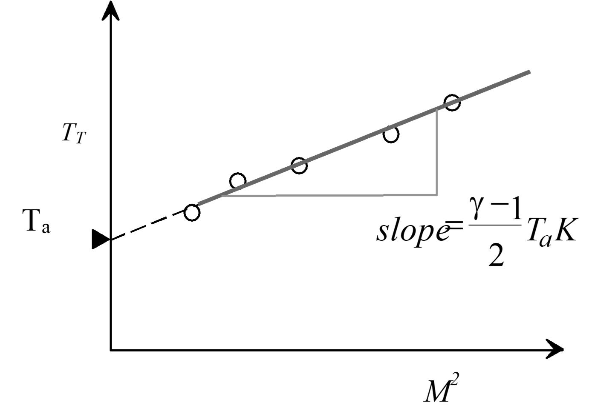
4.6 Altimeter Equation
\(P_a = P_0 \left(1-6.875 35 \times 10^{-6} H\right)^{5.256}\) below 36,089 ft
\(P_a = P_0 \left(0.223 35 \right) \textrm{e}^{-0.000 048 06[H-36089]}\) above 36,089 ft
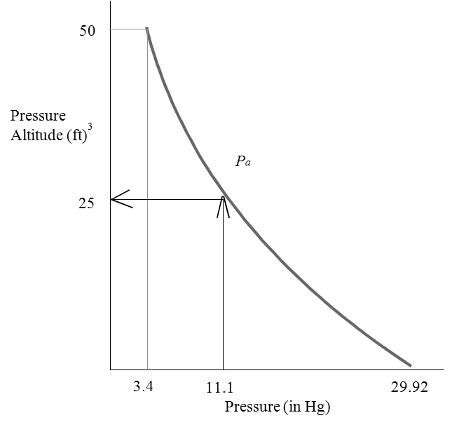
| Symbol | Definition |
|---|---|
| \(H_i\) | indicated pressure altituide (29.92” Hg) |
| \(\Delta H_{\mathrm{ic}}\) | instrument error correction |
| \(H_{\mathrm{ic}}\) | altimeter corrected of instrument error |
| \(\Delta H_{\mathrm{pc}}\) | position error correction |
| \(H_c\) | calibrated pressure altitude |
4.7 Position Error Test Methods
4.7.1 Fly-by
As depicted below, the flyby method originally used some sort of viewing platform with surveyed distances and a grid or other device for determining the aircraft’s relative angle above the platform’s altimeter. This information combined to give the aircraft’s actual pressure altitude. Modern methods replace the tower system with a radar altimeter or GPS unit to determine tapeline height above the flyby line (\(H_g\)). This geometric height is converted to a pressure altitude change using a temperature correction. When added to the aircraft’s pressure altitude on the runway, this change provides the actual pressure altitude during the flyby (\(\textrm{Actual } H_c = \textrm{runway pressure altitude} + H_g (T_s/T_t)\)).
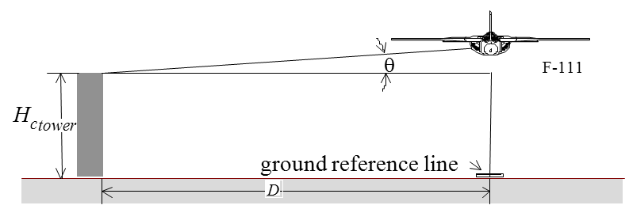
\[\begin{equation*} \text{Actual } H_{c} = H_{c_{\mathrm{tower}}} + \left( D\tan\theta \cdot \frac{T_{s}}{T_{t}} \right) \end{equation*}\]
\[\begin{equation*} \Delta H_{\mathrm{pc}} = \text{Actual } H_c - \left( H_i + \Delta H_{\mathrm{ic}} \right) \end{equation*}\]
\[\begin{equation*} \Delta P_s = \rho g \Delta H_{\mathrm{pc}} \end{equation*}\]
\[\begin{equation*} \Delta P_{S} = q_{c} - q_{\mathrm{cic}} \end{equation*}\]
\[\begin{equation*} \Delta P_{S} = \frac{1}{2}\rho_{0}{V_{c}^{2} - \frac{1}{2}\rho_{0}{V_{\mathrm{ic}}}^{2} \text{ (low Mach only)}} \end{equation*}\]
Solve for \(V_c\)
\[\begin{equation*} \Delta V_{\mathrm{pc}} = V_c - V_{\mathrm{ic}} \end{equation*}\]
See flowchart for high mach or \(P_T \ne 0\) cases.
Note: A check on basic instrument calibration is easily accomplished using a “ground block” where a parked test aircraft compares altimeters with tower. Any error can be treated as a bias.
This altitude-based test method determines altimeter corrections and therefore static error directly. Accurately converting this static source error to an airspeed correction also requires knowledge of the test pitot tube’s total pressure error (\(\Delta P_T\) ). This can be determined either through direct comparison with a calibrated noseboom pitot pressure or from one of the airspeed-based methods that directly yield airspeed corrections (pace, ground course, GPS). In lieu of these options, the pitot error may assumed to be zero, but this will reduce confidence in the calculated value for airspeed correction.
4.7.2 Ground Course Method
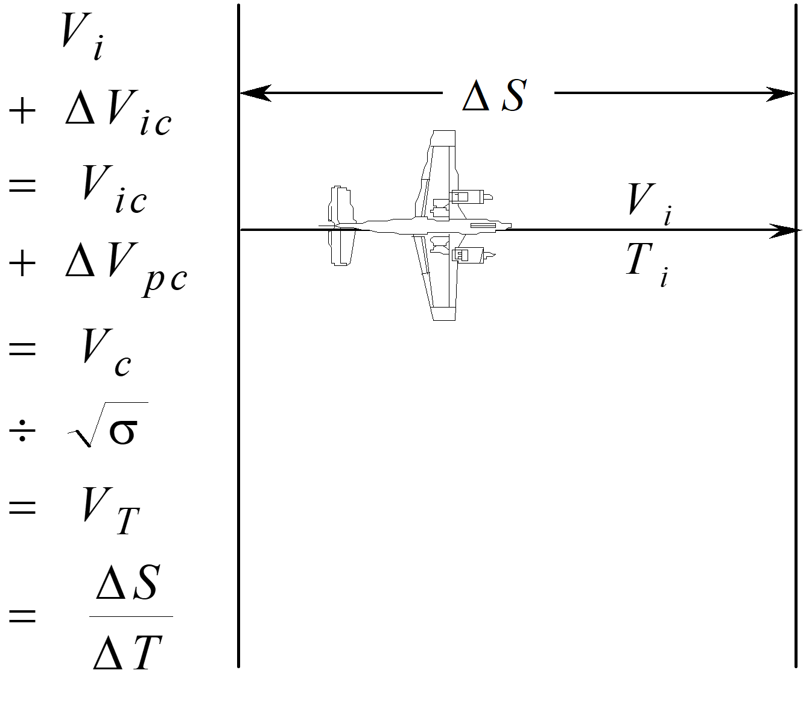
Fly known course at constant \(V_i\)
Elapsed time = \(\Delta T\), therefore \(V_T = \frac{\Delta S}{\Delta T}\)
Use \(H_i\) and \(T_i\) to compute \(V_e = V_T \left(\sqrt{\sigma} \right) = V_c\) for low altitude
Correct \(V_i\) for instrument error corrections (\(\Delta V_{\mathrm{ic}}\)) using
\[\begin{equation*} V_{\mathrm{ic}} = V_i + \Delta V_{\mathrm{ic}} \end{equation*}\]
\[\begin{equation*} \Delta V_{\mathrm{pc}} = V_c - V_{\mathrm{ic}} \end{equation*}\]
To determine altimeter error assume \(\Delta P_T = 0\)
\[\begin{equation*} \frac{1}{2} \rho_0 \left[ V_c^2 - V_{\mathrm{ic}}^2 \right] = +\Delta P_s \end{equation*}\]
\[\begin{equation*} \Delta P_s = +\rho g \Delta H \end{equation*}\]
If \(\Delta P_T \ne 0\), then \(\Delta H_{\mathrm{pc}} = + \frac{\Delta P_s - \Delta P_T}{\rho g}\)
Error resulting from a \(\frac{1}{2}\) sec timing error
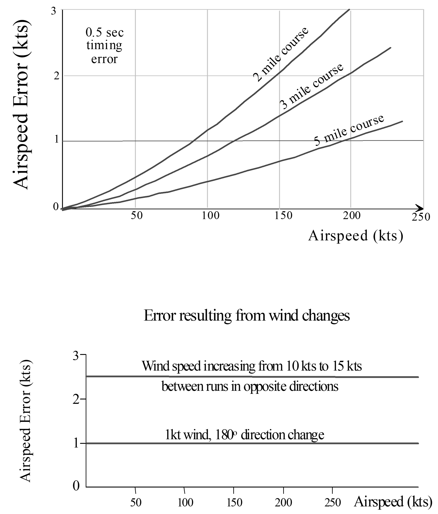
This airspeed-based test method determines airspeed corrections directly. Accurately converting this airspeed error to a static source error requires knowledge of the test pitot tube’s total pressure error (\(\Delta P_T\)). This can be determined using one of the altitude-based methods that directly yield altitude corrections (tower fly-by, trailing cone or bomb). In lieu of these options, the pitot error may assumed to be zero, but this will reduce confidence in the calculated values for static pressure error and altimeter correction.
4.7.3 Trailing Cone/Bomb Method
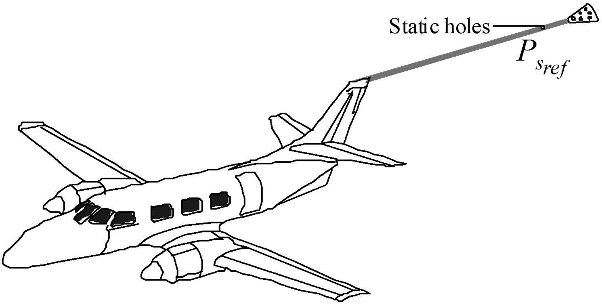
- Measure \(P_s\) (ref) away from pressure field of aircraft
- Cone is used to stabilize static line
- No speed limitations
- Inexpensive—can be trailed on landing
- Consider lag effects during rapid altitude changes
\(\Delta P_s = \Delta P_{s_{\mathrm{A/C}}} - \Delta P_{s_{\mathrm{REF}}}\)
\(\Delta H_{\mathrm{pc}} = +\frac{\Delta P_s}{\rho g} = \textrm{altimeter correction}\)
\(\Delta P_T - \Delta P_s = \Delta P_D = q_{\mathrm{ic}} - q_c \text{ assuming } \Delta P_T = 0 \text{ , } M < 0.2\)
If pitot errors do exist, then they must be included in calculations for \(\Delta V_{\mathrm{pc}}\) (see flowchart).
Using a trailing cone during stall testing may give airspeed errors due to lag errors during the deceleration.
This altitude-based test method determines altimeter corrections and therefore static error directly. Accurately converting this static source error to an airspeed correction also requires knowledge of the test pitot tube’s total pressure error (\(\Delta P_T\)). This can be determined either through direct comparison with a calibrated noseboom pitot pressure or from one of the airspeed-based methods that directly yield airspeed corrections (pace, ground course, GPS). In lieu of these options, the pitot error may assumed to be zero, but this will reduce confidence in the calculated value for airspeed correction.
4.7.4 GPS Methods
The attraction
- no aircraft modifcations required
- no trailing cone or aircraft plumbing mod
- no flight test boom
- no limitation on speed or altitude
- can be done down to near stall
- any altitude
- easy data reduction
- no correlation with pace aircraft, ground radar, or other references required
Various methods available, all assume steady winds and ambient temperature. You must determine wind speed and direction to calculate \(V_T\) and \(T_0\) and to ensure steady winds existed during test series.
GPS accuracies are variable. Know tolerances before accepting GPS as a truth model.
If exact (\(\pm 10°\)) winds are calculated inflight, you can fly one pass directly into/away from the wind
\[\begin{equation*} V_T = V_G + V_{Headwind} \end{equation*}\]
This airspeed-based test method determines airspeed corrections directly. Accurately converting this airspeed error to a static source error requires knowledge of the test pitot tube’s total pressure error (\(\Delta P_T\)). This can be determined using one of the altitude-based methods that directly yield altitude corrections (tower fly-by, trailing cone or bomb). In lieu of these options, the pitot error may assumed to be zero, but this will reduce confidence in the calculated values for static pressure error and altimeter correction.
Graphs in Section 4.11 separately show the effect of measurement errors in \(\Delta P_T\), air temperature, or true airspeed on \(\Delta V_c\) calculations . The last chart of this Section shows how each knot of accumulated \(\Delta V_c\) uncertainty affects the \(\Delta H_c\) uncertainty at various altitudes and temperatures.
Flying four legs instead of three allows four separate calculations of wind speed & direction to confirm stable winds at that test airspeed. If several real-time calculations of winds confirm constant direction and velocity, then testing may be shortened by flying only one pass directly into or away from the wind. If this is done, an end-of-test wind calibration must be performed to confirm steady winds throughout the test series. To minimize temperature and wind variations, testing should be accomplished within a relatively small area.
Horseshoe Track GPS Method
- Horseshoe track method
- fly three legs with each perpedicular ground tracks, noting GPS ground speed on each
- determine true airspeed by solving three equations in three unknowns
- Practical problem
- need to fly close to the ground, tracking perpendicular ground references
True airspeed: \(V_T = \frac{1}{2} \sqrt{V_1^2 + V_2^2 + V_3^2 + V_1^2 \times \frac{V_3^2}{V_2^2}}\)
Wind velocity: \(V_W = \sqrt{\left( \frac{V_1 - V_3}{2} \right)^2 + \left( \frac{V_2 - V_1 \times V_3 / V_2}{2} \right) ^2 }\)
Wind direction: \(\psi_W = \tan^{-1} \frac{V_2 - V_1 \times V_3 / V_2}{V_1 - V_3}\)
Horseshoe Heading GPS Method
- Horseshoe Heading Method
- Fly three legs with perpendicular headings, noting GPS ground speed on each
- Determine true airspeed by solving three equations in three unknowns
Wind direction: \(\psi = \tan^{-1} \frac{-V_{G1}^2 + 2V_{G2}^2 - V_{G3}^2}{V_{G3}^2 - V_{G1}^2}\)
Wind velocity: \(V_W = \frac{1}{2} \left[ V_{G3}^2 + V_{G1}^2 \pm \sqrt{ \left(V_{G3}^2 + V_{G1}^2 \right)^2 \pm \left( \frac{-V_{G1}^2 + 2V_{G2}^2 - V_{G3}^2}{\sin{\psi}} \right)^2 } \right]^{1/2}\)
True airspeed: \(V_T = \sqrt{\frac{V_{G3}^2 + V_{G1}^2}{2} - V_W^2}\)
The “Windbox” method consists of flying four legs instead of three. The extra leg provides a fourfold increase in wind calculations to improve result confidence. The “Orbis” method extends this advantage by collecting data at every heading throughout a level turn.
Cloverleaf Method
(Microsoft Excel spreadsheet adapted from Doug Gray, NSW Australia)
- Fly three legs with approximately 90-120 degree difference between headings.
- Can be accomplished in a broad turn as with the horseshoe method, or
- Directly over a single point (cloverleaf maneuver).
- Accurate results require
- Identical values for indicated airspeed (and TAS) for all legs.
- Constant winds throughout data collection (single W/S vector in figure).
- Approx. 10 seconds stable ground speed, Vg, (G/S in figure) during each leg.
- Aircraft heading results for each leg entail an airborne compass swing.
| Inputs for each 3-leg data set |
|---|
| \(V_{g_1}\) \(V_{g_2}\) \(V_{g_3}\) |
| \(Trk_{1}\) \(Trk_{2}\) \(Trk_{3}\) |
| Intermediate calculations |
|---|
| \(X_1 = V_{g_1} * \sin(\pi * (360 - Trk_1) / 180)\) |
| \(Y_1 = V_{g_1} * \cos(\pi * (360 - Trk_1) / 180)\) |
| \(X_2 = V_{g_2} * \sin(\pi * (360 - Trk_2) / 180)\) |
| \(Y_2 = V_{g_2} * \cos(\pi * (360 - Trk_2) / 180)\) |
| \(X_3 = V_{g_3} * \sin(\pi * (360 - Trk_3) / 180)\) |
| \(Y_3 = V_{g_3} * \cos(\pi * (360 - Trk_3) / 180)\) |
| \(M_1 = -(X_2 - X_1) / (Y_2 - Y_1)\) |
| \(M_2 = -(X_3 - X_1) / (Y_3 - Y_1)\) |
| \(B_1 = (Y_1 + Y_2)/2 - M_1 * (X_1 + X_2) / 2\) |
| \(B_2 = (Y_1 + Y_3)/2 - M_2 * (X_1 + X_3) / 2\) |
| \(V_{W_x} = (B_1 - B_2) / (M_2 - M_1)\) |
| \(V_{w_y} = M_1 * V_{W_x} + B_1\) |
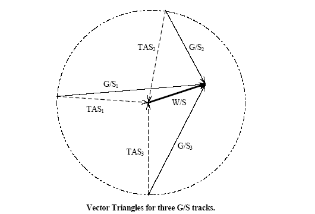
| Results |
|---|
| Aircraft true airspeed \(= V_T = \left[\left(X_1 - V_{W_x}\right)^2 + \left(Y_1 - V_{W_y}\right)^2 \right]^{0.5}\) |
| Total wind speed \(= V_W = \left[\left(V_{W_x}^2 + V_{W_y}^2\right)\right]^{0.5}\) |
| Wind direction \(= \psi_W = Psi_W = \mod(540 - (180/\pi * \textrm{ATAN2}(V_{W_y}, V_{W_x})), 360)\) |
| 1st leg a/c heading \(= \psi_1 = Psi_1 = \mod(540 - (180/\pi * \textrm{ATAN2}(V_{W_y}-Y_1, V_{W_x}-X_1)), 360)\) |
| 2nd leg a/c heading \(= \psi_2 = Psi_2 = \mod(540 - (180/\pi * \textrm{ATAN2}(V_{W_y}-Y_2, V_{W_x}-X_2)), 360)\) |
| 3rd leg a/c heading \(= \psi_3 = Psi_3 = \mod(540 - (180/\pi * \textrm{ATAN2}(V_{W_y}-Y_3, V_{W_x}-X_3)), 360)\) |
4.8 Position Error FAR 23/25.1323 and .1325/JAR Certification

- Requirements
- Maximum error at sea level must be less than \(\pm 30 \text{ft}/100 \text{kts}\) between \(1.3 V_{\mathrm{SO}}\) and \(1.8 V_{S1}\)
- \(V_{S0} =\) Full flap, gear down, power off, stall speed
- \(V_{S1} =\) Stall speed in a specific configuration
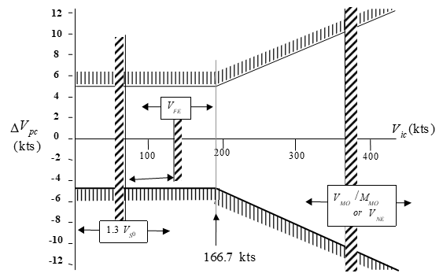
Errors must be equal to or less than \(\pm3\%\) of \(V_c\) or \(\pm5\text{kts}\) whichever is greater
Mil Spec P-26292 C (USAF)
Landing configuration: \(\Delta H_{\mathrm{pc}} \pm 30\) ft.
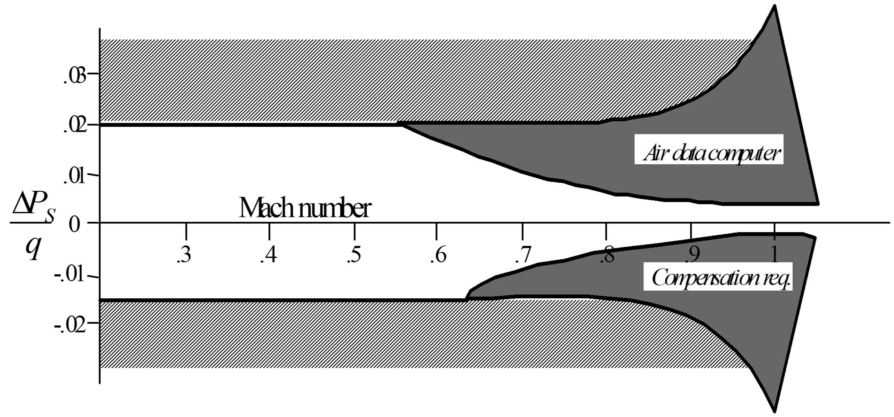
4.9 PEC Correction Process Flow Chart
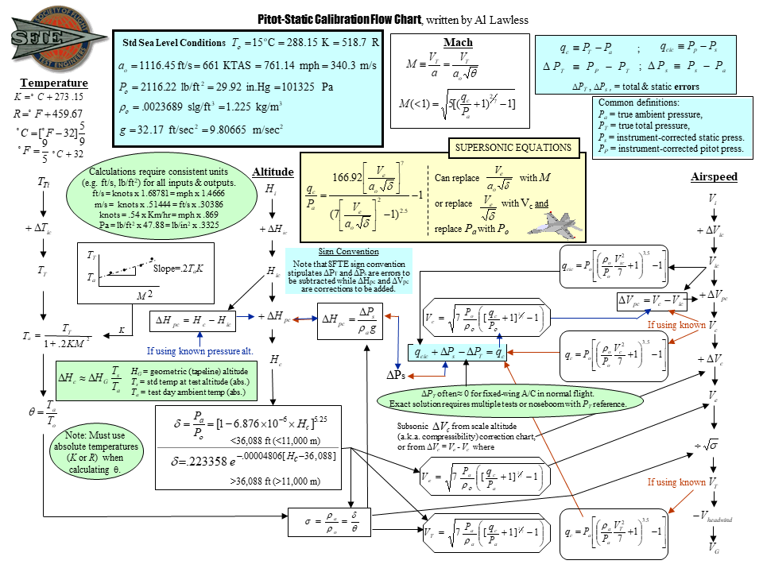
4.10 Airspeed/Altitude/Mach Graphic Relation

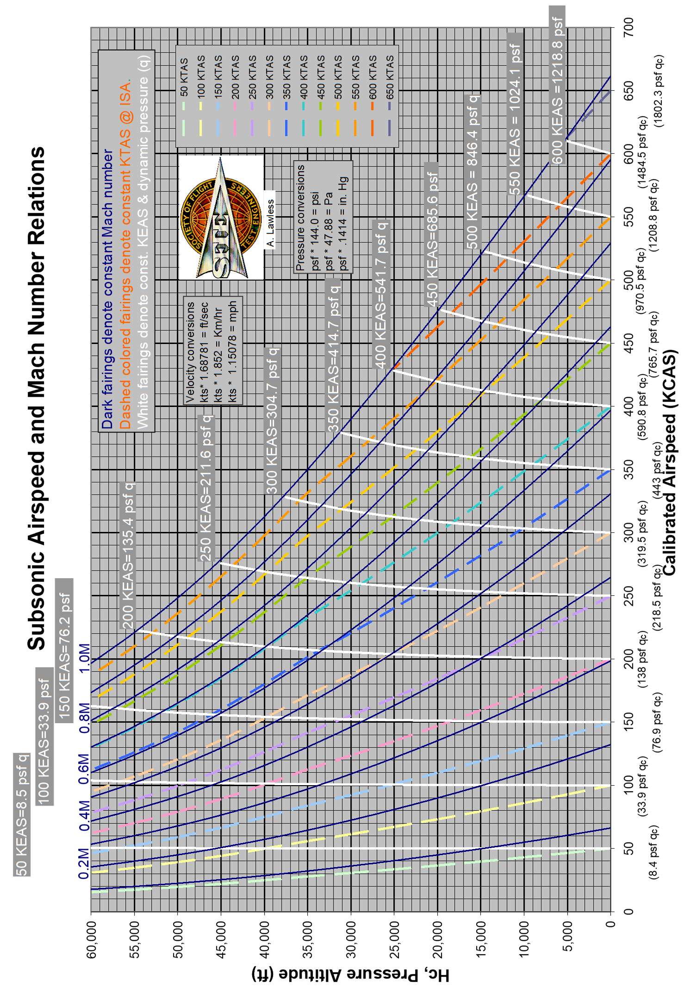
4.11 Effect of Errors on Calibrated Airspeed and Altitude

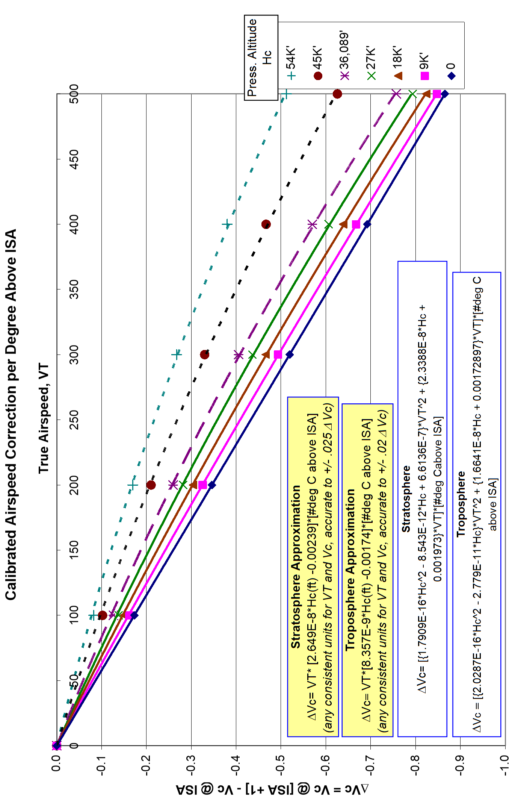

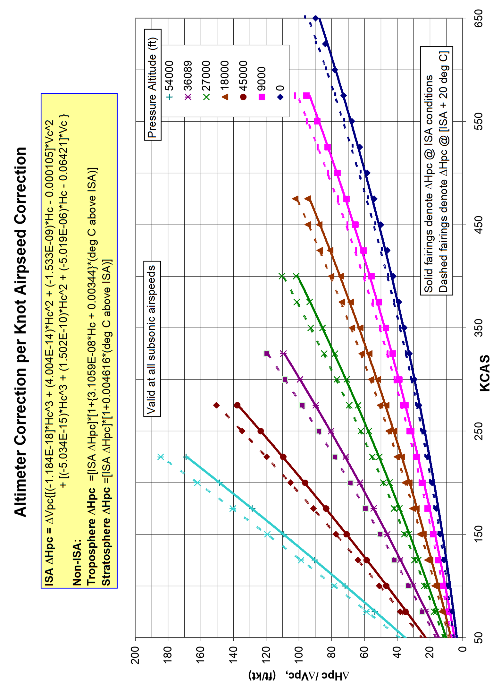